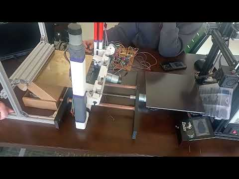
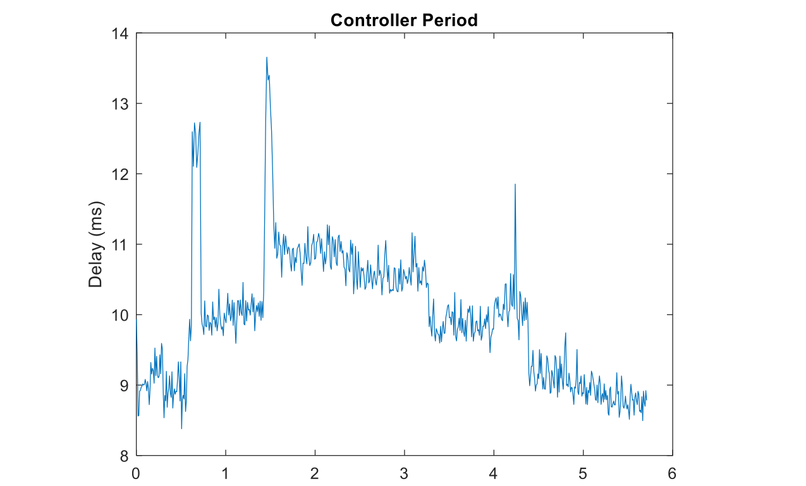
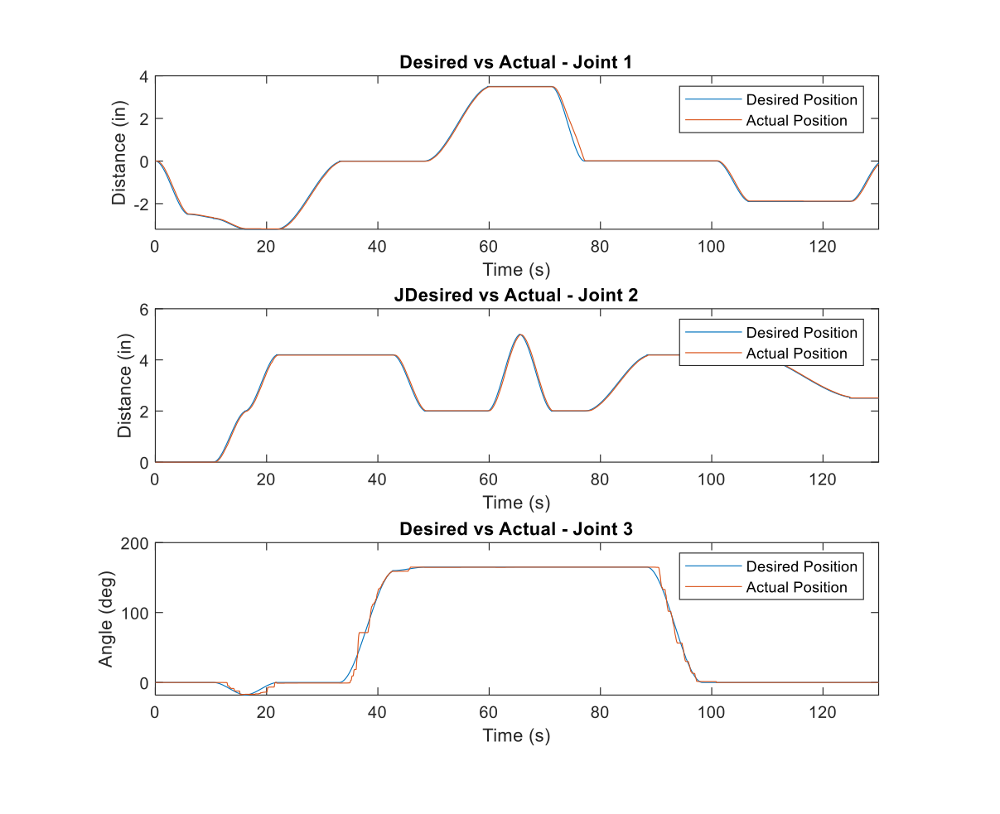
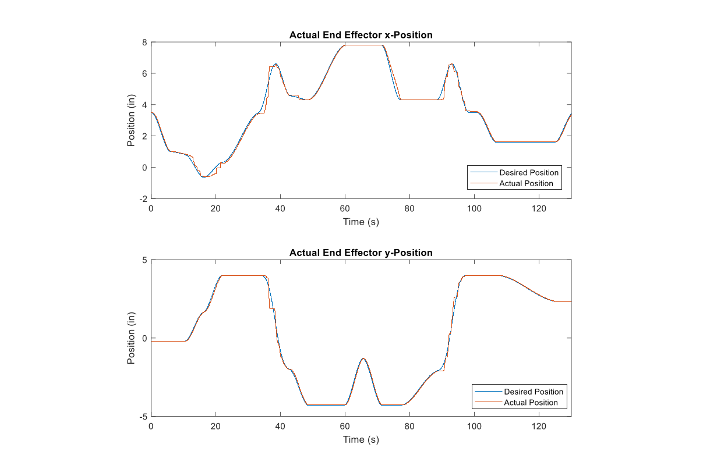

3-DOF Print-Harvesting Robot
A robotic manipulator that clears finished prints off a 3D-printer bed so a print farm can run unattended. It grips the build plate, lifts and flips it, flexes it to pop the print into a bin, and returns the plate. I was the programming lead and built the entire embedded control stack that runs the five motors.
- My role
- Programming lead
- Team
- 5 (teammates: kinematics, electrical, manufacturing, CAD)
- Stack
- Raspberry Pi · Python · pigpio


The problem
A 3D printer sits idle between jobs until a human clears the print bed. Especially in a shared or farm setup, that manual step can be the bottleneck. Our team built a robot to do it: remove the build plate, pop the print off into a collection bin, and replace the plate, so the next job can start without anyone there.
The mechanism is a fixed 3.5-DOF manipulator with a horizontal prismatic joint, a vertical prismatic joint, a revolute wrist joint, and a spring-loaded gripper. Five DC gearmotors drive it: one horizontal, two vertical, one wrist, and one gripper.
My role & design decisions
On a five-person team I was the programming lead and wrote the entire embedded control program that runs on the Raspberry Pi. (Teammates owned the kinematics and trajectory analysis, the electrical and purchasing work, manufacturing, and CAD.) I built
- Cubic-spline trajectory generation per joint between waypoints, for smooth start-to-stop motion.
- Per-motor PI / PID position control by reading encoders to implement closed loop control on each of the five motors.
- 8 kHz hardware-timed PWM to the motor drivers via
pigpio. - Live telemetry display with CSV logging plus custom script exception handling to ensure controlled motor movements and a
CTRL_OVERRIDEdebug mode to allow the motors to be zeroed while still streaming data.
Encoder counts close the loop back to the position error each cycle.
The Pi is not a real-time controller, so I designed around it. The position error is rounded before the integral term so it can actually reach zero given finite encoder resolution, and I measure the real elapsed time per encoder read instead of assuming a fixed sample period. Those two choices help keep the motor control loops stable on a general-purpose OS.
Debugging story — timing
I first drove the motors with software-timed PWM but the motors consistently performed poorly no matter how much I tried to tune the PID controllers. The plot shows why. Because the Pi runs a full operating system, it interrupts the control script unpredictably. The software-timed PWM was built on this inconsistent clock and never actually produces the duty cycle commanded by the controller.
I confirmed the duty-cycle mismatch on an oscilloscope, then switched to pigpio's hardware-timed (DMA-based) PWM at 8 kHz. With the duty-cycle waveform now independent of OS jitter, the commanded duty cycle was actually output by the Pi and tuning became repeatable.

Software-timed PWM → hardware-timed (DMA) PWM via pigpio. The root cause was the Pi's non-real-time scheduling; moving the waveform generation off the CPU made the actual duty cycle match the command and turned an unstable system into a controllable one.
Results
With hardware-timed PWM in place, the robot reliably ran a deterministic 21-waypoint harvest sequence. As shown below, actual joint positions track the desired cubic-spline trajectories closely. The tuned controllers (especially on the prismatic joints) are overdamped and stable.
| Parameter | Value | Notes |
|---|---|---|
| Actuators | 5 DC gearmotors w/ encoders | Pololu 37D 50:1, 3200 ticks/rev |
| Motor drivers | MD10C | 12 V, 10 A continuous |
| PWM | 8 kHz, hardware-timed | pigpio (DMA) |
| Target loop rate | ~200 Hz | variable in practice (non-RTOS) |
| Sequence | 21 waypoints | grip → lift → flip → flex → release → return |
| Prototype cost | ~$168 | ≈58% motor drivers; upper-bound estimate |


What I'd build next
- Move motor timing to a real-time MCU. The whole PWM saga is a symptom of running a real-time control loop on a non-real-time OS; a RTOS handling the low-level loops would make timing deterministic by construction.
- Add more safety features. Add homing switches and travel limits to make it safe to leave running as a real printer-farm cell.